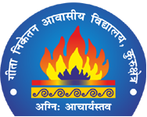

GLORY INTERNATIONAL PUBLIC SCHOOL, ROHRU, H.P
Glory International Public School holds a special place in my heart. It is the institution that laid the foundation for the person I am today. My journey at this school, from nursery to the 8th standard, was a period of immense learning and personal growth.
The school instilled in us invaluable morals that have guided me throughout my life. The principles and teachings imparted by our respected principal, Mr. Vinay Zinta, still echo in my mind. One of my favorite quotes from him is, “Children are similar to raw iron, ready to take any shape. It’s the duty of teachers to shape them properly, just like a blacksmith. But the child must endure the process, just like the iron.” This profound statement has always reminded me of the importance of resilience and adaptability in life.
My time at Glory International Public School was marked by numerous achievements that I cherish. In the 8th standard, I had the honor of representing my state in a volleyball game. This experience not only honed my athletic skills but also taught me the importance of teamwork, discipline, and sportsmanship.
I also had the opportunity to represent my school at a block-level science fair competition. This experience ignited my curiosity and fostered a deep love for science. It taught me the value of critical thinking, problem-solving, and the thrill of discovery.
In addition to these, I represented my block and district in various other activities. Each of these experiences contributed to my holistic development, shaping my personality, and broadening my horizons.
In conclusion, my years at Glory International Public School were more than just an academic journey. They were a transformative phase that instilled in me a strong moral compass, a thirst for knowledge, and the courage to take on challenges. The lessons I learned and the experiences I gained during this time continue to guide me in my life’s journey. I am, and will always be, a proud alumnus of Glory International Public School.

GITA NIKETAN AWASIYA VIDYALAYA,KURUKSHETRA,HR
My academic journey at Gita Niketan Awasiya Vidyalaya, which spanned from 9th to 12th standard, was a transformative period in my life. It was a time of growth, learning,
and taking on responsibilities that shaped me into the person I am today.
As I stepped into the 9th standard, I was entrusted with the responsibility of being the Discipline Incharge. This role was my first taste
of leadership. It taught me the importance of rules and regulations in maintaining a harmonious environment. I learned how to manage my peers, resolve conflicts, and ensure
that everyone adhered to the school’s code of conduct. This experience was instrumental in developing my interpersonal skills and understanding the nuances of effective communication.
In the 10th standard, I was elected as the House Captain. This position brought with it a new set of challenges and responsibilities. I was now in charge of leading my house in various
inter-house competitions and activities. This role honed my leadership skills further and taught me the importance of teamwork, strategic planning, and motivation. It was during this
time that I truly understood the saying, “Unity is strength.”
My leadership journey didn’t stop there. I was also the NCC
Captain of my school. Being a part of the National Cadet Corps was an honor and a privilege. It instilled in me a sense of discipline, patriotism, and selflessness.
I learned the value of hard work, perseverance, and resilience.
The rigorous training sessions, the camps, the parades, and the drills were challenging but rewarding. They not only strengthened me physically but also mentally.
The pinnacle of my leadership journey was when I was appointed the Head Boy of the school in my final year. This was a role that came with great responsibility and high expectations.
As the Head Boy, I was the representative of the student body,
the bridge between the students and the administration. I took this responsibility very seriously. I strived to be a good role model for my juniors,
listened to the concerns of my fellow students, and did my best to create a positive and inclusive school environment.